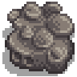

Roca
| Roca | |
|  | |
| Una masa de piedra extremadamente densa. | |
| Información | |
| Origen | La Granja • Las minas • Caverna Calavera |
Las Rocas son una fuente principal de piedras en el juego. Se pueden encontrar en la granja y en las minas.
Las rocas se pueden picar utilizando un pico de cobre o uno de mejor calidad.
Cada tipo de roca contiene 10 piedras.
Rocas en las minas
Las Rocas en las minas se pueden picar con un pico de cobre o uno de mejor calidad.
Rocas que se pueden encontrar en las minas, en los pisos 1-39, 81-199, y aleatoriamente en la Caverna Calavera.


Rocas que se pueden encontrar en las minas, en los pisos 41-79.